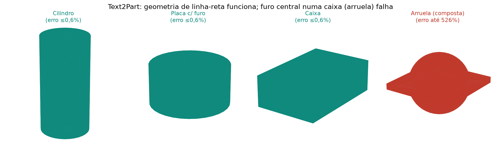

Success stories · Case · CAD from text
A CAD part from a text description, and where it still fails
A local LLM chooses between deterministic geometric builders. The final mesh never comes from the text — and every failure stays visible and measurable.
Validated
Objective
Describing a part in text — “a rectangular plate with a central hole” — and getting a valid STL today takes a CAD engineer. An LLM that drew the mesh directly could hallucinate physically invalid geometry, and the error would stay invisible until printing. This case asks whether the convenience of text can be had without giving up the geometric guarantee.
Key results
- For single-builder geometry, dimensional error stays inside 0.6% — cylinder, box and plate with a hole.
- For a composite part, the error went past 500%. The LLM picked the wrong builder for a washer and justified it with a geometrically wrong description.
- The product never hallucinates loose triangles: every failure is a wrong choice of builder or parameter, visible and measurable against the requested description.
The LLM chooses, the builder builds
The local LLM may only choose among existing deterministic geometric builders — cylinder, box, plate with a hole, boolean — and their parameters. The final mesh always comes from the builder, never from the model's text.
That turns “generate geometry” into “choose the right construction”, which is a verifiable problem: the resulting mesh dimensions can be compared against the dimensions asked for in the description.
The failure that matters: wrong builder
For the washer, the LLM picked the box-with-a-hole builder and justified it: “a washer is a box with a cylindrical hole cut from its center”. The description is wrong — a washer is a cylinder with a through hole, not a box — and the mesh came out distorted.
The failure mode is the point: not a random invalid geometry, but a wrong choice among valid options. That is diagnosable and, in principle, fixable with automatic verification of the construction.

“The product never hallucinates loose triangles: every failure is a wrong choice of builder or parameter, visible and measurable against the requested description.”
Bring your case
Got a simulation that is slow, expensive or hard to verify?
Send it over. We come back with a closed scope and a measurable success criterion, or we tell you the classical method does it better.